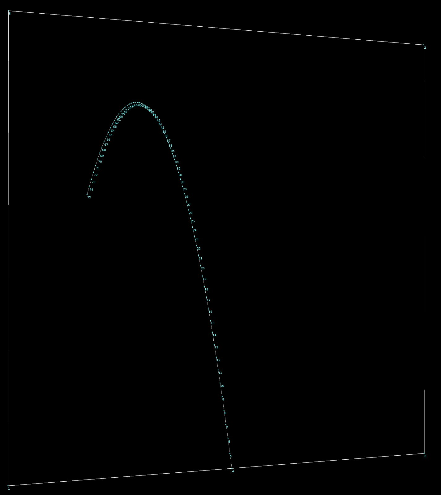

Updated Jan. 1, 2021
For this tool, I wanted to create something more interactive than my last few - rather than moving sliders back and forth and toggling boxes on and off, I wanted a user to be able to click on the viewport and watch something nice happen. I used python states, Houdini's flexible system for creating custom tools with viewport interactivity.
Download the OpenHDA for Houdini here: Direct Download
Houdini has a great library of preset python functionality, so all it took to get the basic setup working were some slight modifications to the add points python state script. The first thing I did was allow for custom geometry input to place the points where the fireworks would explode, then I added a parameter that would track the frame that the point was placed, which was important for animating the fireworks (procedurally) with consistent timing.

Most of the rest of the work happened in VEX, where the trajectories for the fireworks and their explosions, color and emissive attributes, and procedural animations were created. As a final step, I exposed parameters like how large the arcs of the trajectories would be, how fast the fireworks would go, the size of their explosions, and more in the HDA. Feel free to download it and experiment with it as you'd like!
© 2023 Noah Gunther